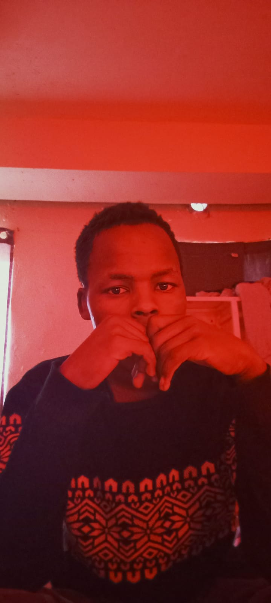

| Name | : AVIUD KIPRONO |
| University | : KISII UNIVERSITY |
| Course | : BSC INFORMATION TECHNOLOGY |
| Year | : SECOND YEAR |
| County | : KISII |
| Phone | : 0725848616 |
I am AVIUD KIPRONO, a passionate and hardworking second year student at KISII UNIVERSITY pursuing Bachelor of Science in Information Technology. I am a dedicated IT student with a strong interest in software development, networking, and solving real world problems through technology. I am eager to learn, quick to adapt, and always ready to take on new challenges. I respect my fellows and I am committed to working hard to achieve my goals in the field of Information Technology.